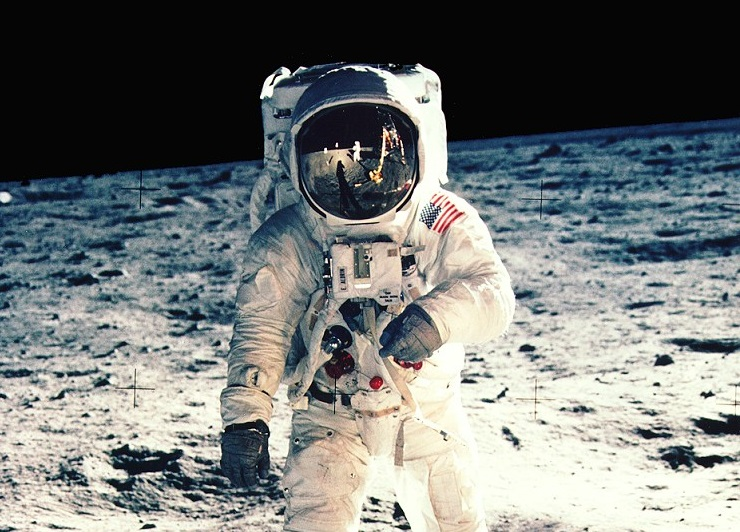
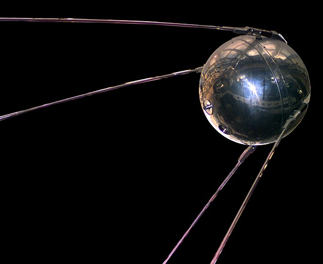
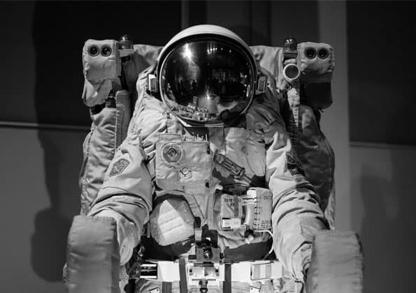

La primera mujer astronauta fue la rusa Valentina Tereshkova.La misión tuvo lugar en 1963 en la Vostok 6. La dama resultó también el primer civil que viajara al espacio.
2. ¿Cuál es la próxima exploración espacial humana?
Después de haber llegado a la Luna, la próxima exploración espacial humana será a Marte, pues es el planeta más cercano y ya se han hecho reconocimientos con sondas que nos han permitido conocer su atmósfera y las características del terreno. El Hombre no solo probará el nivel de la tecnología que utilice para llegar y establecerse allí, sino que además podrá estudiar si hay algún tipo de vida o si es posible que se desarrolle en los tiempos venideros.
3. ¿Cuál fue el primer satélite espacial puesto en órbita?
El primer satélite espacial puesto en órbita fue el Sputnik 1, lanzado el 4 de octubre de 1957 por la Unión Soviética. El segundo, también de la URSS, fue el Sputnik 2, lanzado el mismo año. Por último, el tercero fue el Explorer 1, lanzado en enero de 1958 por Estados Unidos. Obviamente, todo en el marco de la Guerra Fría.
4.Trajes ignífugos
Fabricado con materiales sintéticos termorresistentes, este modelo de traje no arde y ni se derrite cuando entra en contacto con las llamas. Los de proximidad, usados en la lucha contra el fuego y en accidentes aéreos, ¡aguantan hasta 260 ºC! Obviamente, los utilizados por los astronautas también deben ser capaces de proteger en condiciones de temperaturas extremas: del intenso frío espacial (-270 ºC) y del calor de la reentrada en la atmósfera terrestre (1.260 ºC).